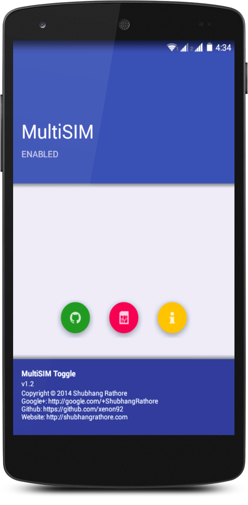
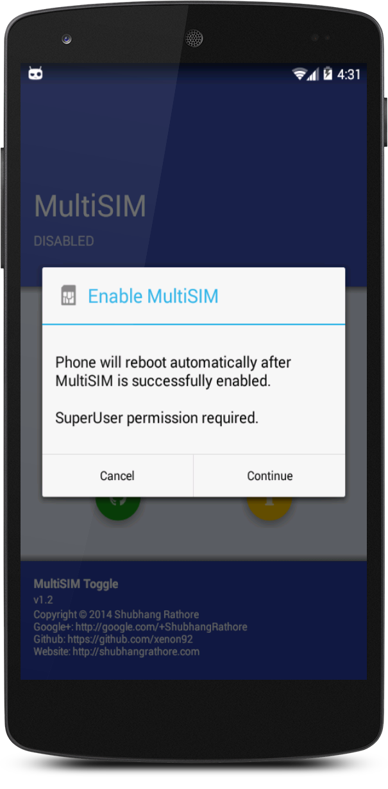

MultiSIM Toggle
An open source app for android, to enable or disable multi-SIM functionality on multi-SIM supporting AOSP based ROMs. The app toggles the ROM from multi-SIM to single SIM functionality and vice versa.
During my debugging work, I found myself switching from single SIM mode to multi-SIM and vice versa quite frequently. To do so, I had to type the following shell commands:
Allow SuperUser execution at shell
su
To enable multi-SIM
setprop persist.radio.multisim.config dsds
To disable multi-SIM
setprop persist.radio.multisim.config none
So I made an app for that. It executes these commands at shell level without the need to open terminal manually and type in these commands.
NOTE: Use this app only if you are sure that your ROM supports multi-SIM. Even if your device is multi-SIM capable, but your ROM isn't, using this app might lead to unforeseeable results. Contact your device maintainer to add multi-SIM support.
Features
- Minimal and clean interface
- Translucent decors for android 4.4+ (kitkat)
- Android L style floating buttons (thanx to FAB library)
Screenshots


How to use?
- Take a nandroid backup
- Install MultiSIM Toggle
- Tap the floating SIM button
- Grant SuperUser permission
- Automatic reboot of the device if toggle is successful
Support
Bugs reports, suggestions and support can be found on XDA-developers thread for MultiSIM Toggle.
Requirements
- Root
- Android 4.0.3+
- MultiSIM supporting AOSP based ROM
Downloads
Check the 'Releases' section in my Github source.
Source code
Source code of the app can be found at my Github repository.
Changelog
v1.2
- Added animation to multi-SIM toggle floating button
- Open developer's website (http://shubhangrathore.com) on tapping footer
v1.1
- Initial Release
License
The source code is licensed under GNU General Public License v3 (GPL v3)
Copyright
© 2014 Shubhang Rathore